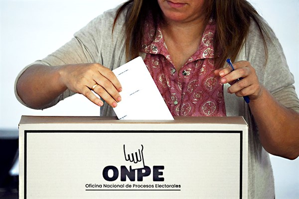

Keiko Fujimori minimiza investigación por lavado de activos: "Refrito electoral sin sustento"
Conoce los resultados
de la encuesta realizada
Accede a datos actualizados sobre la intención de voto y las tendencias nacionales.
100%80%60%40%20%0%
Notifiko
Roberto Sánchez critica gestión actual: "Este es el gobierno de la continuidad parlamentaria"
Nuestra Plataforma
VeriFiko es un espacio digital independiente diseñado para brindar a los ciudadanos información clara y verificada sobre los candidatos presidenciales del Perú. Nuestro objetivo es combatir la desinformación y empoderar el voto consciente a través del análisis de datos abiertos y trayectorias públicas.
Partidos Políticos
Bienvenido a VeriFikoTest
Responde 10 preguntas clave sobre temas de interés nacional para descubrir qué candidato se alinea mejor con tus convicciones políticas y sociales.
Sobre Nosotros
Conoce el propósito, compromiso y transparencia de Verifiko.

Misión
Ser la plataforma líder en Perú para el empoderamiento ciudadano a través de información política verificada y transparente, promoviendo la participación informada.
Visión
Proporcionar a ciudadanos peruanos de todas las edades (especialmente jóvenes a adultos mayores de 18 años) una herramienta accesible y confiable para comparar y entender a los candidatos presidenciales del Perú, basándose en datos verificables, historial de gestión, propuestas y una evaluación rigurosa de aspectos como la ética y la transparencia en el contexto peruano, fomentando un voto consciente y crítico.
Objetivos
Recopilar encuestas digitales dentro de la plataforma web para evaluar cómo la información presentada sobre los candidatos presidenciales influye en la toma de decisiones de los usuarios. Se busca medir la claridad, confiabilidad y utilidad del contenido, promoviendo el voto informado, el análisis crítico y la participación ciudadana mediante resultados reflejados en barras comparativas y estadísticas dentro de la página principal.